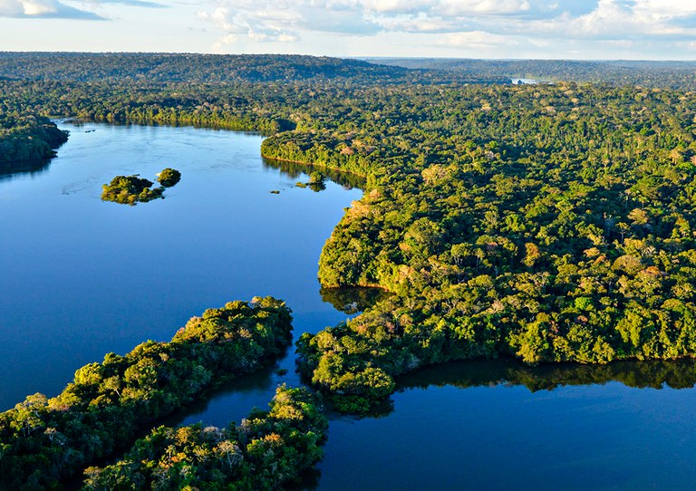

Domínio Morfoclimático da Amazônia
O Domínio Morfoclimático da Amazônia é caracterizado pelo relevo baixo, abundância hídrica, chuvas constantes e grande necessidade de preservação.
O Domínio Morfoclimático da Amazônia possui grande diversidade e é o maior do Brasil
O domínio morfoclimático amazônico é uma das principais divisões geográficas do Brasil e abrange a maior parte da região amazônica. Caracteriza-se por ser uma área de extensa floresta tropical, com um clima quente e úmido ao longo do ano.
Relevo
Em resumo, o relevo do domínio amazônico é predominantemente plano, com planícies aluviais extensas e algumas áreas de relevo mais elevado, como planaltos, chapadas e depressões. Essas características do relevo estão diretamente relacionadas aos processos geológicos e hidrológicos que ocorreram ao longo da história da região.
Clima
Em resumo, o clima do domínio amazônico é quente e úmido ao longo do ano, com temperaturas elevadas e chuvas abundantes. É caracterizado por um clima equatorial, com altas temperaturas médias, estabilidade térmica e precipitação bem distribuída ao longo dos meses. A umidade é elevada, contribuindo para a formação da vegetação exuberante e da biodiversidade da região.
Solos
Os solos da Amazônia são considerados de baixa fertilidade, de forma que a floresta mantém-se em razão do clímax do ecossistema. Existe certo mito de que esse domínio é predominantemente formado por solos arenosos, mas eles compõem apenas 7% do total de sua área. A maior parte dos solos da Amazônia é composta por latossolos e argissolos. Apesar da baixa produtividade, existem algumas áreas com terrenos muito férteis, como os solos de várzea, que são eventualmente inundados pelos rios, e um solo orgânico bastante produtivo chamado de terra preta.
Apesar da baixa produtividade, existem algumas áreas com terrenos muito férteis, como os solos de várzea, que são eventualmente inundados pelos rios, e um solo orgânico bastante produtivo chamado de terra preta.
Hidrografia
A hidrografia do domínio amazônico é caracterizada por uma extensa rede de rios e bacias hidrográficas. O principal destaque é o Rio Amazonas, que atravessa a região de oeste para leste, com mais de 6.400 km de extensão. Além do Rio Amazonas, há uma infinidade de afluentes, como os rios Negro, Madeira, Tapajós e muitos outros. Esses rios desempenham um papel vital no transporte fluvial, na drenagem da região e na manutenção do equilíbrio hidrológico. A hidrografia amazônica é fundamental para a biodiversidade local, oferecendo habitats aquáticos diversos e sustentando a vida de comunidades humanas tradicionais que dependem dos recursos hídricos para sua subsistência.
Vegetação
A floresta amazônica é cientificamente chamada de floresta latifoliada equatorial por se encontrar em uma área de baixas latitudes (equatorial) e por apresentar grupos vegetais com folhas largas e grandes (latifoliada). Ela é composta por uma vegetação heterogênea – com grande diversidade –, densa e perene, ou seja, que não perde suas folhas ao longo do ano em nenhuma estação. Além disso, a vegetação da amazônia é do tipo hidrófila, ou seja, adaptada à abundante presença de água.
As fitofisionomias da floresta amazônica apresentam, ainda, variações que podem ser agrupadas conforme os níveis de proximidade em relação aos cursos d'água. Existem, assim, três tipos principais: as matas de igapó, as matas de várzea e as matas de terra firme.
a)matas de igapó: encontram-se em regiões de rios de planície e em áreas inundadas de forma permanente, com solos alagados. Os principais tipos são a vitória-régia, o açaí, o cururu e outros.
b)matas de várzea: são as que se localizam nas proximidades de rios e ocupam áreas que são eventualmente alagadas. Os exemplos principais são o cacaueiro, a copaíba e a seringueira.
c)matas de terra firme: como o nome sugere, são as árvores que ocupam áreas onde não há inundações fluviais, apresentando um tamanho maior do que as demais e uma maior variabilidade. Destaque para o guaraná, a castanheira e o mogno.
A grande questão atual da floresta amazônica – e, por extensão, do domínio morfoclimático da Amazônia – faz-se com relação à ocupação humana em suas áreas. Atividades agropecuárias extensivas e a mineração ameaçam boa parte de sua formação, colocando em risco a existência da própria floresta, que hoje conta com 83% de sua área original.
Clique aqui para saber mais